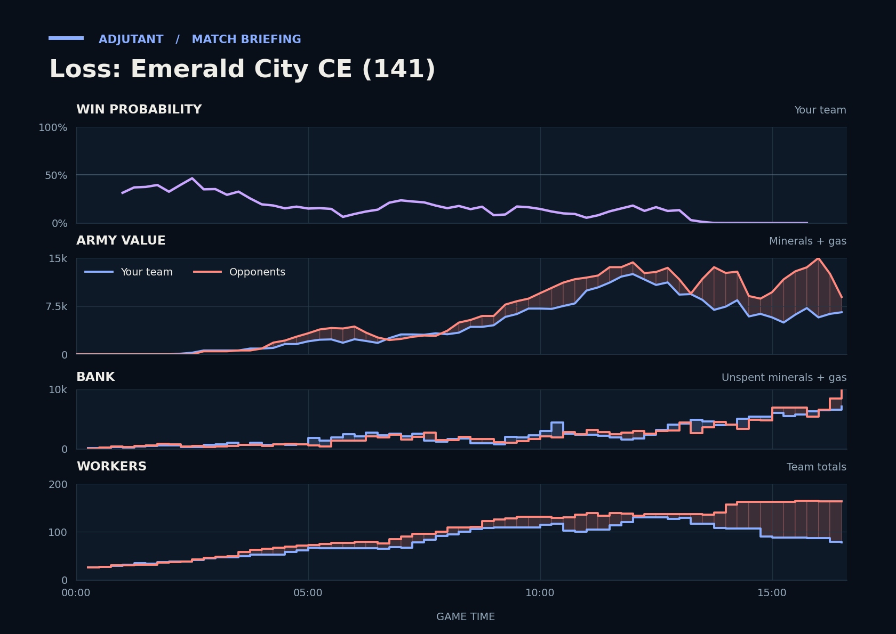

Loss: Emerald City CE (141)
Provisional debrief. The full report (timeline, insights and analysis) is being generated.

**Loss.** You lost because in the 12:38–14:09 fighting, MoonFace's Siege Tanks and Marauders killed your Roaches and Hydralisks far faster than your army traded back, and the natural Hatchery and main Orbital Command fell.
**Why**
- 7:08–8:00: Their army value rose to about 4,200 while yours stayed flat. The big fights later began with you behind.
- 12:38–14:09: You lost army, 15 SCVs, the natural Hatchery and the main Orbital Command, while their buildings lost nothing. Scallop was supply blocked after depots died.
- 16:12–16:35: Scallop's army killed 4,800 of Capi's army but lost SCVs and the Planetary Fortress. The gg followed.